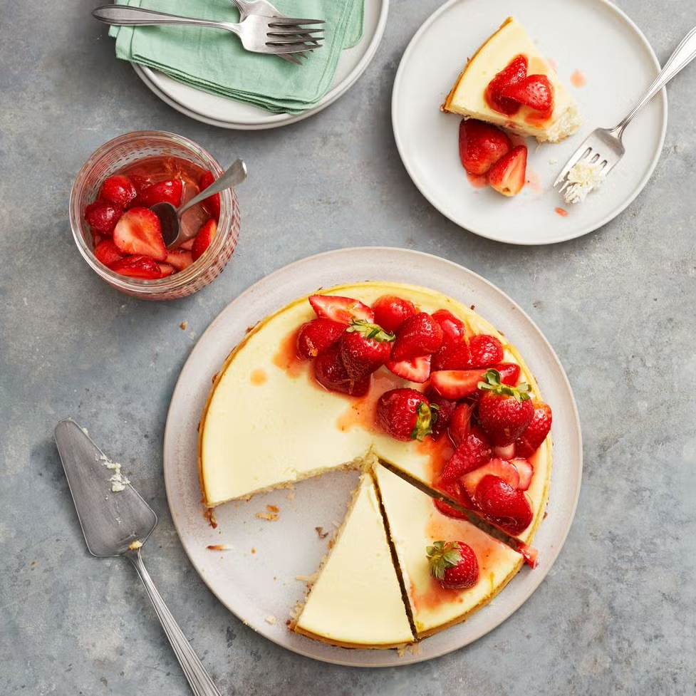

Chef: Yeganeh
| Ingredient | Quantity |
|---|---|
| Large eggs | 4, divided |
| Sugar | 3/4 cup + 3 Tbsp, divided |
| Sweetened shredded coconut | 2 cups |
| Lemon | 1 |
| Cream cheese | 3 8-oz packages, at room temperature |
| Sour cream | 3/4 cup |
| Potato starch | 1 Tbsp |
| Pure vanilla extract | 2 tsp |
| Strawberry jam | 1 Tbsp |
| Small strawberries | 1/2 lb, hulled and halved or quartered if large |